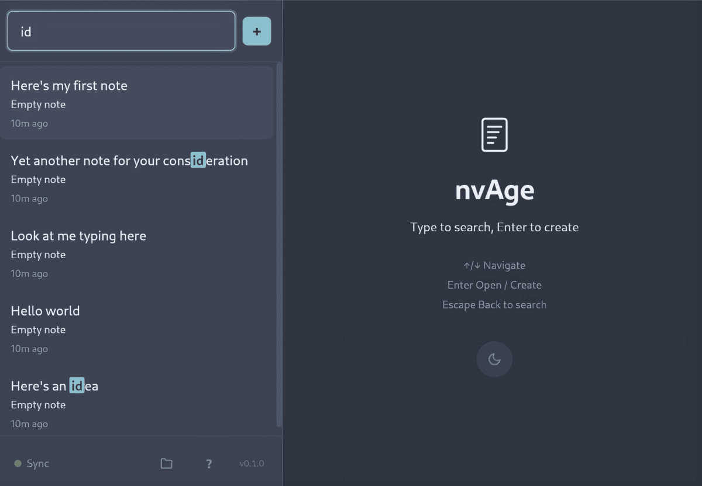

Notes that stay
on your machine
A fast, private notes app in the tradition of Notational Velocity. Type to search, press Enter to create. Your notes are plain Markdown files — readable by any editor, grep-able, portable.
Instant search
Full-text search across all notes on every keystroke. SQLite-backed, sub-10ms response.
Keyboard-first
Arrow keys navigate, Enter opens or creates, Escape returns to search. No mouse needed.
Encrypted sync
Notes encrypted with age before they leave your device. Sync via Git to any remote.
Plain Markdown
Your notes are just .md files in a folder. Open them in any editor, back them up however you like.
Nord theme
Dark and light modes using the Nord colour palette. Respects your OS preference automatically.
Auto-sync
When configured, sync runs every 5 minutes in the background. A status dot shows if you're up to date.

How it works
Launch and type
The app opens with your cursor in the search field. Start typing to filter notes instantly.
Create or open
Press Enter to open a matching note, or to create a new one if nothing matches.
Edit with autosave
Changes are saved automatically as you type. No save button, no save shortcut, no save indicator.
Sync across devices
Optionally configure encrypted sync via Git. Your notes are encrypted with age before they leave your machine.